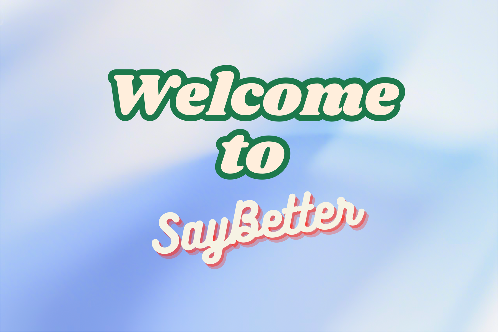

讲外语时，明明已经组织好了句子，却还是忍不住怀疑：“我的语法正确吗？母语者真的会这样说吗？”
即使使用母语，也常常会纠结：“这句话够正式吗？会不会表达得太直接？有没有更自然、更恰当的说法？”
但当你正在编辑消息时，为了确认一句话是否正确，你可能需要打开浏览器、切换到 AI 工具、复制粘贴文本……这样的过程是不是有些繁琐？
SayBetter 让表达优化变得更加简单。你只需要按下 Option + Space，或者任意你设置的快捷键，即可快速唤起应用。SayBetter 会自动读取你的剪切板内容，帮你检查语法、优化语气，并提供更自然、更合适的表达方式。
无论是学习外语、撰写邮件、工作沟通，还是日常聊天，SayBetter 都帮助你快速确认：
“这样说，对吗？”
Have you ever found yourself speaking a foreign language and wondering, “Is my grammar correct? Would a native speaker actually say it this way?”
Even in your native language, you may still hesitate: “Does this sound formal enough? Is it too blunt? Is there a clearer or more natural way to say it?”
Normally, checking a sentence means opening a browser or switching to an AI app, pasting your text, and waiting for a response. When you are already writing a message, does that feel unnecessarily complicated?
With SayBetter, you can simply press Option + Space, or any shortcut you choose, to instantly open the app. SayBetter automatically reads the text from your clipboard, checks it for grammar and tone, and suggests a clearer, more natural way to express your meaning.
Whether you are learning a language, writing an email, communicating at work, or sending a message, SayBetter helps you answer one simple question:
Does this sound right?